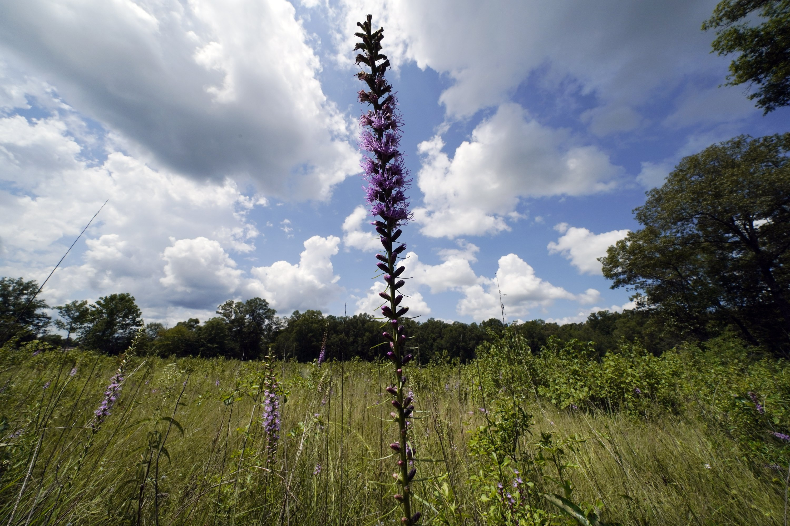

Content
(1) While Portland reached a record temperature of over 110 degrees Sunday, June 27, 2021 people gathered at Salmon Street Springs water fountain in Portland to cool off. (Mark Graves The Oregonian)

(2) Karen Chen of the USA performs during the Ladies Free Skating at the Figure Skating World Championships in Stockholm, Sweden, Friday, March 26, 2021. (Martin Meissner)
(3) Firefighters work to douse a fire in a multi-storied office building in Dhaka, Bangladesh, Thursday, March 28, 2019. Fire Department control room official Ershad Hossain said by phone the FR Tower in Dhaka's Banani commercial district caught fire Thursday afternoon and at least 19 fire fighting units joined the operation to douse the blaze and rescue the people trapped inside. (Mahmud Hossain Opu )
douse
英[daʊs]
美[daʊs]
释义：
v. 浇灭（火）；熄（灯）；往…上泼水；把…浸在液体里；
n. 泡；倾注；〈英方〉一击；
网络：熄灭；用水泼；放松；
(4) A man pulls a child on a sleigh, during a heavy snowfall in Bustarviejo, outskirts of Madrid, Spain, Saturday, Jan. 9, 2021. A persistent blizzard has blanketed large parts of Spain with 50-year record levels of snow, halting traffic and leaving thousands trapped in cars or in train stations and airports that suspended all services as the snow kept falling on Saturday. Half of Spain is on alert, with five provinces on their highest level of warning. (Bernat Armangue)
sleigh
英[sleɪ]
美[sleɪ]
释义：
n. 雪橇；
v. (用雪橇在雪地或冰面上)滑行；
网络：雪车；雪撬；扒犁；
persistent
英[pə(r)'sɪstənt]
美[pər'sɪstənt]
释义：
adj. 执着的；不屈不挠的；坚持不懈的；连绵的；
网络：坚持的；固执的；持续的；
(5) People drag a small boat in a flooded St.Mark square in Venice, Italy, Sunday, Nov. 17, 2019. Venetians are bracing for the prospect of another exceptional tide in a season that is setting new records. Officials are forecasting a 1.6 meter (5 feet, 2 inches) surge of water Sunday through the lagoon city. (Luca Bruno)
lagoon
英[lə'ɡuːn]
美[lə'ɡun]
释义：
n. 潟湖；氧化塘；环礁湖；濒海湖；
网络：泻湖；咸水湖；礁湖酒吧；

(6) A variety of plants grow in an open grassland area at the May Prairie State Natural Area on Aug. 20, 2020, in Manchester, Tenn. Grasslands come in various forms — wetland bogs, rocky barrens, lush prairies, even woodlands — anywhere the tree cover is sparse enough to allow grasses, flowers and other small plants to flourish. (Mark Humphrey)
prairie
英['preəri]
美['preri]
释义：
n. 北美草原；新大陆北部草原（美国北部和加拿大）；
网络：大草原；牧场；草原风格；
lush
英[lʌʃ]
美[lʌʃ]
释义：
adj. 多汁的；味美的；青葱的；草木茂盛的；
n. 酒；醉汉；
v. (使)喝醉；
网络：露诗；草木茂盛的样子；繁茂的；
sparse
英[spɑː(r)s]
美[spɑrs]
释义：
adj. 稀少的；稀疏的；零落的；
网络：创建稀疏矩阵；生成稀疏矩阵；
(7) In this photo taken on Tuesday, Sept. 4, 2108, a waiter adds chocolate to coffee cups, at the Starbucks store in Milan, Italy. Starbucks opens its first store in Italy Friday, betting that premium brews and novelties like a heated marble-topped coffee bar will win patrons in a country fond of its espresso rituals. Decades ago, Milan’s coffee bars had inspired the chain’s vision. Starbucks hopes clients will linger at Starbucks Reserve Roastery, where they can watch beans being roasted, sip Reserve coffee or have cocktails at a mezzanine-level bar in a cavernous space that once was a post office near the city’s Duomo, or cathedral. (Luca Bruno)
premium
英[ˈpriːmiəm]
美[ˈprimiəm]
释义：
n. 保险费；额外费用；奖金；津贴；
adj. 优质的；昂贵的；价格更高的；
网络：溢价；升水；保费；
novelty
英['nɒv(ə)lti]
美['nɑv(ə)lti]
释义：
n. 新颖；新奇；新鲜；新奇的事物（或人、环境）；
adj. 新奇的；风格独特的；
网络：新颖性；新奇性；新奇事物；
espresso
英[e'spresəʊ]
美[eˈspresəʊ]
释义：
n. 浓咖啡；一杯浓咖啡；
网络：浓缩咖啡；特浓咖啡；义式浓缩咖啡；
mezzanine
英['metsəniːn]
美['mez(ə)n.in]
释义：
n. （介于两层楼之间、比其他楼层小的）夹层；
网络：夹层融资；中层楼；阁楼；

(8) Two women take pictures as far fewer visitors than normal are seen at the world-famous Keukenhof garden in Lisse, Netherlands, Friday, April 9, 2021. Finally, after month after bleak month of lockdown, there are springtime shoots of hope emerging for a relaxation of coronavirus restrictions at a Dutch flower garden and other public venues. Keukenhof nestled in the pancake flat bulb fields between Amsterdam and The Hague opened its gates Friday to a lucky 5,000 people who were allowed in only if they could show proof on a smartphone app that they had just tested negative for COVID-19. (Peter Dejong)
negative
英['neɡətɪv]
美['neɡətɪv]
释义：
n. 否定；底片；负片；拒绝；
v. 否定；拒绝；否定…的真实性；证伪；
adj. 坏的；有害的；消极的；负面的；
网络：否定的；阴性；负的；
(9) People sit on the Cafe de Flore terrace in Paris, Tuesday, June 2, 2020. Parisians who have been cooped up for months with take-out food and coffee will be able to savor their steaks tartare in the fresh air and cobbled streets of the City of Light once more, albeit in smaller numbers. (Christophe Ena)
tartare
英[tɑr'tɑr]
美[tɑr'tɑr]
释义：
n. 【化】酒石；酒石酸氢钾；【医】牙垢；牙石；
网络：鞑靼；欧洲鞑靼肉脍或鱼脍；牛肉鞑靼；
albeit
英[ɔːl'biːɪt]
美[ɔl'biɪt]
释义：
conj. 尽管；虽然；
网络：即使；纵令；
cobble
英['kɒb(ə)l]
美['kɑb(ə)l]
释义：
n. 鹅卵石；【地】中砾；卵石路；圆煤块；
v. 制（鞋）；修补（鞋）；
网络：圆石；粗砾；拙劣地拼凑在一起；
(10) A young girl walks away after receiving a plate of food and drinking water at a temporary shelter for children in Pemba city, on the northeastern coast of Mozambique, Thursday May 2, 2019. More than 1 million children have been affected by a pair of cyclones that ripped into Mozambique in less than two months, the United Nations children's agency says, and now many of the children are without shelter or food. (Tsvangirayi Mukwazhi)
rip
英[rɪp]
美[rɪp]
释义：
v. （突然或猛烈地）撕破；猛地扯开；突然拉开；
n. （织物、纸张等）撕开的大口子；
网络：路由信息协议(Routing Information Protocol)；路由选择信息协议；撕裂；
Posted on 2021-07-11 11:57:44